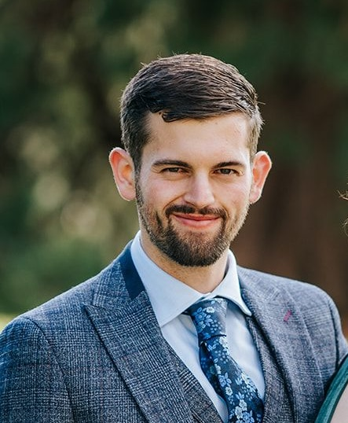

Overview
I received my BSc in Mathematics from the University of Sussex, England in 2022, and I am currently a PhD student under the primary supervision of Dr Iñaki Esnaola. My research project is titled Machine Learning Methods for Monitoring of Complex Water and Sewer Network Infrastructure, and is in collaboration with (sponsored by) Thames Water and the EPSRC Centre for Doctoral Training in Water Infrastructure and Resilience.
Collaborators in this project include:
Research Interests
Broadly speaking, my research interests lie within probability theory, information theory, numerical solution to ODEs and PDEs, and data science. My research project involves using information theoretic measures as a cost function for the optimal sensor placement problem and machine learning for anomalous events in waste collection networks.Publications
- Under Review (2nd revision), submitted to Water Research: Crowley, G., Tait, S., Speight, V., & Esnaola, I. (2024). Information-Theoretic Sensor Placement for Large Sewer Networks.
- Preprint: Crowley, G., & Esnaola, I. (2024). Submodularity of Mutual Information for Multivariate Gaussian Sources with Additive Noise. ArXiv, abs/2409.03541.
Teaching Activities
- University of Sheffield Graduate Teaching Assistant (GTA), Jan 2023 - Present:
- AER124 - Analysis and Modelling of Aerospace Systems.
- ACS232 - Signals, Systems and Communications.
- ACS6106 - Cybersecurity for control systems.
BSc Dissertation
My bachelors dissertation was titled Methods for the Observational Model and was supervised by Professor Anotida Madzvamuse (University of British Columbia), Dr James Van Yperen (University of Sussex) and Dr Eduard Campillo-Funollet (University of Lancaster).
PhD Candidate
School of Electrical and Electronic Engineering
University of Sheffield
Sir Henry Stephenson Building
Sheffield
England
Email: gcrowley1@sheffield.ac.uk
Visiting research student at: